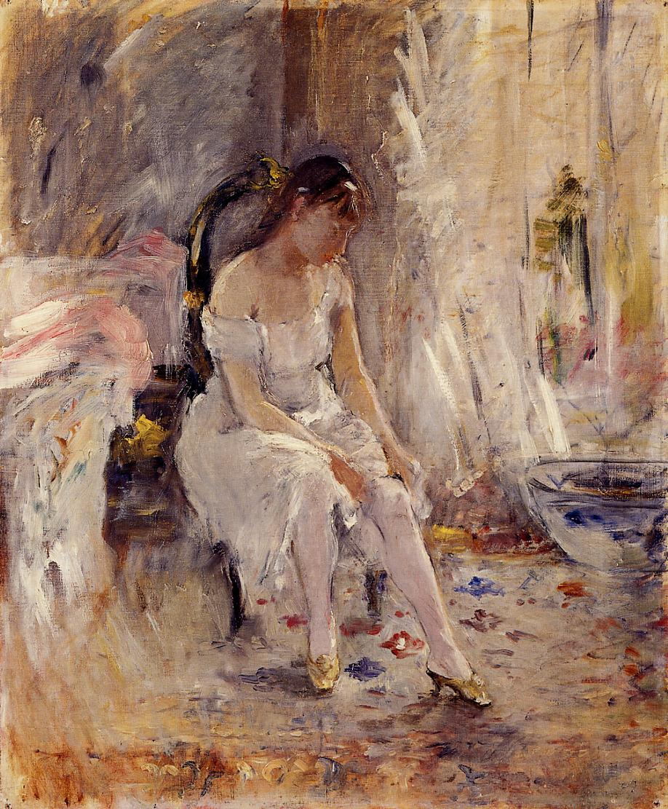

Tags: female-portraits
Style: Impressionism
Artist: Morisot Berthe
Title: Young Girl Putting on Her Stockings
Year: unknown-year
Genre: genre painting
Categories: fountain (84.1%); cliff (9.3%); paintbrush (0.5%); cliff_dwelling (0.4%); padlock (0.2%)